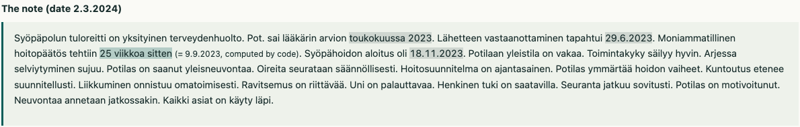
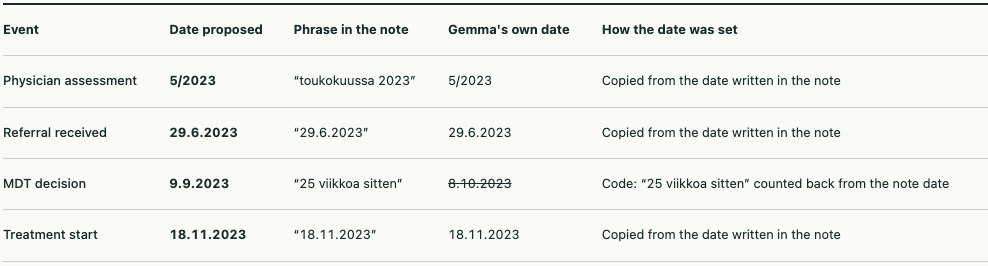
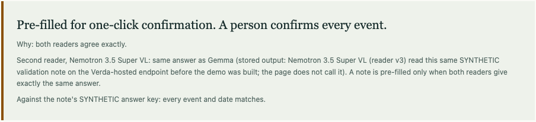

Junction 2026 · AstraZeneca challenge "Equal Care Across Finland"
SAMA
sama is Finnish for "the same"
The same cancer pathway for everyone in Finland: wherever they live, whoever they are, however they enter care.
Start here · Satakunta wellbeing services county · one county, one next step · proposal for human review
Then a nurse-confirmed list of people whose next step is overdue (slide 7). Review at 90 days: review timestamp completeness, median and 90th-percentile waits, and target-time attainment; investigate missing data before regional interpretation.
Public data for 23 areas: the 21 wellbeing services counties, Helsinki and Åland. Everything patient-like is SYNTHETIC and labelled. A person confirms every extracted event and every list item.
InsightThe gap
By chance
Finland's national lung programme: lung cancers found in time are mostly found by chance, on scans taken for something else. What happens after that scan decides how early treatment starts.
42%
of cancers have their stage recorded nationally. The aim is at least 70%.
InsightWho, how and where
Who is missed (individual-level figures, Finland)
Act on it. Roadmap measure 1.3.1: raise screening among people whose mother tongue is not Finnish or Swedish. Mailed HPV self-sampling to cervical-screening non-attenders: relative participation 1.21 (1.13-1.30) in a Finnish trial.
How you enter care
Median days from first symptom to treatment, one Finnish lymphoma cohort (p = 0.027)
Where you live
Five-year survival does not differ significantly between regions. County averages cannot see who is missed: breast-screening attendance is lowest in Helsinki (74.3%, 2024), where many women screen privately.
InsightA target nobody can see
No legal limit found
The OECD/EU reports a target of 6 weeks from a suspected-cancer referral to treatment. The treatment-guarantee law allows treatment up to 6 months after the need is established and names no cancer-specific limit. THL guidance 21/2016 not checked (unverified).
Not measured
THL's access statistic covers non-urgent care only, as month-end snapshots. Person-level reporting through THL's waiting-list feed (TTP) is due by 2028 at the latest.
Not computable
The strategy's own Goal 3 indicator, "treatment within target times", has status not publicly measurable from open data today.
ActionabilityThe Pathway Clock
SYNTHETIC simulation for the data-size estimateDate 1
Well-founded suspicion of cancer
Date 2 + reason
End: treated, ruled out or other
With each pathway
County of residence · entry route (public primary care, occupational or private, emergency, other)
Optional, for a pilot county that wants to find where a delay sits: first contact · referral sent · diagnosis · treatment start.
Carriers exist
THL's person-level waiting-list feed (TTP) for the clock; the cancer quality register at THL's Cancer Registry (roadmap 3.2.1, EUR 2,500,000) for stage and route. Add the fields while 3.2.1's variable set is being fixed.
Placeholders
Thresholds are placeholders: 42 days from referral to treatment is the OECD/EU-reported target, not a legal limit.
How much data is enough? To see a county that is 20% slower in one interval, a county needs 473 / 513 / 347 complete pathways (primary care / diagnostic / treatment). At an assumed 37,000 cases a year, areas that get there:
Data quality and transparencyCan this county see itself?
SYNTHETIC simulated people and model-written notesA county whose dates are read badly looks slow when it is not. Each dot is one of 23 simulated counties: how far off its referral-to-treatment interval is. Outside the band, the figure stays visible but is labelled "not comparable".
comparable not comparable (median error above ±3 days or over 10% of events missed; placeholder limits)
100.0% → 0.3%
No county is truly slower, yet one whose dates come from free text is flagged "slow" in 100.0% of 1,000 simulated runs. With Gemma reads, code counts: 0.3%, the same as when a person confirms every event (0.3%).
253 of 253
county cells computed with NVIDIA FLARE 2.9.1 on 23 simulated sites equal the central computation. Only totals leave a site.
72%
Real data: only Pirkanmaa records stage for at least 70% of cancers (Sisä-Suomi 60%, others 33-42%). It is the only area that could be compared on stage today.
ActionabilityClose the loop
SYNTHETIC replay of simulated peopleSatakunta, replayed as of 2025-12-01: 120 open loops, 16 overdue
10 imaging follow-ups past the date the radiologist wrote 6 referrals with no diagnosis by day 42 (placeholder: OECD/EU-reported target)
4 more written recommendations wait for a person to set a date. A code rule copies the radiologist's written follow-up and computes the due date; vague lines go to a person (60 of 60 SYNTHETIC test lines right).
Since 1.6.2026
a county may identify patients whose care does not follow recommendations; contacting them must respect data protection and self-determination. Whether this covers pathway timing is unverified; to confirm with STM and THL before a pilot.
53 days
Close loops before buying speed: in a trial of 93,326 GP chest X-rays, AI prioritisation left the median time to CT at 53 days in both arms (ratio 0.97, 0.93-1.02).
County-owned
The county owns the list and the care; a nurse confirms each item and calls. In the pilot no patient data leaves the county: Gemma runs locally, and the second reader must run in a county-controlled environment (designed, not built) or a person does that step.
ExecutionGemma reads, code counts
SYNTHETIC notes written by language models"25 viikkoa sitten"
("25 weeks ago") Dates in referral letters are often relative. Gemma 3 270M finds the phrase; code counts back from the note date to 9.9.2023; Gemma's own date, 8.10.2023, is not used.
2 of 367
test notes with a relative date came out right when Gemma did the subtraction itself. That is why code counts.
18 of 20
demo notes exact on the laptop CPU through the product's own endpoint, median 4.8 s per note. Finnish notes only; other languages go to manual entry.
The demo runs the 270M product adapter on a laptop CPU. Nemotron's answer is stored, or asked live from the page with one button (the SYNTHETIC note goes to the hosted endpoint). The two-reader figures in the title and on slide 9 use Gemma 3 1B.
The product: demo note 4, stored output (SYNTHETIC)



ExecutionTested on a frozen stress set
SYNTHETIC notes written by language models1 · Each reader alone, on 308 stress notes frozen before any system read them
Goal set in advance for the small 270M phrase model: not met. It got 11 of 143 new phrasings right against 0 for the code rule (it needed 10 points more), and 73 of 87 standard notes (it needed 85%).
Vague dates such as "a couple of weeks ago" sent to a person: 29, 0, 0, 3 of 29 (code rule, 270M, 1B, Nemotron); Nemotron left the date out in 25.
2 · Gemma 3 1B and Nemotron together: pre-filled only when both agree exactly
The pairing was chosen on 310 validation notes only (300 pre-filled, 0 wrong). The earlier single-reader setup pre-filled 263 of 700 test notes with 7 wrong. A person confirms every note either way.
Nemotron also drafts each county's plan; code checks every number
23 of 23 areas drafted · 255 of 299 sentences kept · 0 kept with a number not in a tool output · 9 of 10 off-limits requests refused by the model (1 stopped by a code guard added afterwards)
ActionabilityThe zero-euro 2027 plan
The Cancer Organisations say no strategy money is in sight for 2027. These actions need no capital spending.
| Action | Owner | Roadmap | Measured by |
|---|---|---|---|
| Put pre-booked appointment times back into screening invitations | County screening unit | 1.3.1 | Attendance by mother tongue and education |
| Run the overdue-pathway list with existing care coordinators | County cancer centre | 1.2.3 | Follow-ups closed on time; items resolved within 14 days |
| Send two dates and an end reason in THL's person-level feed | County data team with THL | 3.2.1 | Share of new suspected-cancer pathways with both dates and an end reason |
Why action 1: Helsinki cervical screening attendance (one city, before and after)
ActionabilityThe ask
Satakunta: a 2027 worklist pilot for every overdue suspected-cancer referral, lung follow-up first. The county owns the list; a nurse confirms each item and calls.
We do not claim a diagnosis, a statement about any patient, or that any county's care is worse. Nothing from simulated people or model-written notes is a finding about Finnish patients. AstraZeneca sponsors the challenge; no AstraZeneca data or product information is used and no medicine is recommended.
Satakunta
Data quality and transparencyTechnical appendix
src/stats.mjs, src/analysis.mjs). Small counts are suppressed, not ranked.gp_wait_over_7d is measured against a legal maximum that changed from 2025; values after 2024 are not comparable with earlier ones.Data quality and transparencyTechnical appendix
| SAMA action | Fit | Measure | Pages | Roadmap owner |
|---|---|---|---|---|
| pathway-timestamps | serves | 3.2.1 | 59-60 | STM (decree change), THL / Finnish Cancer Registry (establishes and maintains the register), FICAN |
| timed-pathways | named | 3.1.2 | 56-57 | FICAN with the national multidisciplinary cancer groups (pathway content); wellbeing services counties and HUS (implementation) |
| equal-fast-lane | serves | 2.5.2 | 52-53 | FICAN (coordination and roll-out) with the national multiprofessional cancer groups |
| navigation | serves | 1.2.3 | 32 | FICAN (writes the guidance), wellbeing services counties and HUS |
| ldct-pilot | named | 2.3.4 | 46-47 | Ministry of Social Affairs and Health (STM), Palko, the national cancer screening steering group (or a new steering structure), Finnish Cancer Registry, wellbeing services counties and the City of Helsinki |
| self-sampling | serves | 2.4.4 | 50 | Finnish Cancer Registry, wellbeing services counties, HUS and the City of Helsinki |
| screening-reminders | serves | 1.3.1 | 33 | Wellbeing services counties, City of Helsinki and HUS, NGOs, Cancer Registry, THL |
| ai-mammography | named | 2.4.2 | 48-49 | Ministry of Social Affairs and Health (STM), national cancer screening steering group or a new steering structure |
| four-timestamps | serves | 4.1.1 | 77-78 | Wellbeing services counties, City of Helsinki and HUS, THL, national multidisciplinary cancer groups |
ldct-pilot action means joining the national lung screening pilot (2.3.4).Data quality and transparencyTechnical appendix
SYNTHETIC where marked| Product adapter C-270m-all-v2data | Model alone | + code resolver |
|---|---|---|
| Validation (selection), 310 notes | 134 | 289 |
| Test, 700 notes (read before, post hoc) | 305 | 651 |
| Validation, 310 SYNTHETIC notes (MLX) | Exact | Test (post hoc) |
|---|---|---|
| A': model writes absolute dates + frozen Finnish lexicon rule | 293/310 | 668/700 |
| B: Gemma 3 270M copies the phrase, code computes every date | 290/310 | 636/700 |
| C: Gemma 3 1B, same method | 304/310 | 684/700 |
Data quality and transparencyTechnical appendix
SYNTHETIC where marked| Simulated county figure | Every event confirmed | Model as is | + code resolver |
|---|---|---|---|
| False flag: county from text, country from structured fields | 0.3% | 100.0% | 0.3% |
| False flag: county written like Haiku, country like Nemotron | 0.3% | 1.8% | 0.4% |
| Change | Validation exact | Paired |
|---|---|---|
| v0: Nemotron writes absolute dates itself | 192/310 | |
| v1: copies the date as written; code computes it | 282/310 | +29 pts, 98 fixed, 8 worse |
| v1 rerun unchanged (noise floor) | 282/310 | 6 up, 6 down |
| v2: + schema validation and one repair retry | 287/310 | p = 0.30 |
| v2g: + every date must be printed in the note | 290/310 | p = 0.55 |
| v3: + enable_thinking | 304/310 | +4.5 pts, p = 0.0005 |
Data quality and transparencyTechnical appendix
SYNTHETIC where marked| Validation | Test (post hoc) | Stress (frozen) | |
|---|---|---|---|
| Pre-filled for one-click confirmation (both agree) | 300/310 | 684/700 | 220/308 |
| Wrong among pre-filled | 0 | 4 (0.6%) | 3 |
| Needs editing | 10 | 16 | 88 |
Data quality and transparencyTechnical appendix
SYNTHETIC where marked| System | All | Standard | New phrasings | No event | Vague to a person | Vague given a precise day |
|---|---|---|---|---|---|---|
| Gemma 3 270M + Finnish code rule | 88/308 | 76/87 | 0/143 | 11/49 | 29/29 | 0 |
| Gemma 3 270M, phrase only | 85/308 | 73/87 | 11/143 | 0/49 | 0/29 | 17 |
| Gemma 3 1B, phrase only | 223/308 | 84/87 | 95/143 | 44/49 | 0/29 | 11 |
| Nemotron 3.5 Super VL | 280/308 | 86/87 | 120/143 | 49/49 | 3/29 | 0 |
data/scribe/stress/preregistration.json); hashes of the stress set, resolver and adapters are re-checked in the results file.submission/deck/build.mjs; submission/deck/numbers.json lists each with its file and path.submission/evidence-v2.json: every link re-opened and its retrieval time recorded. Literature values: data/evidence/literature-v1.json.Data quality and transparencyTechnical appendix
SYNTHETIC where markedforward-v1, no model.genomics/README.md).